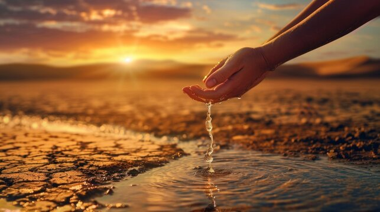
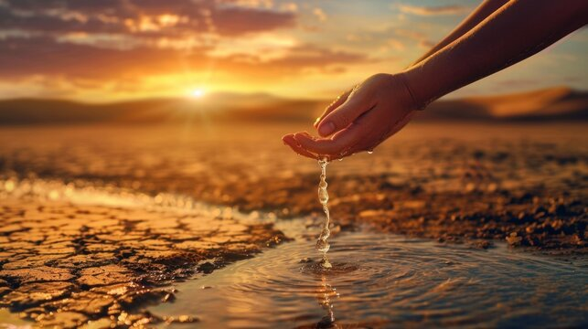

Overview
Water scarcity is one of India's most pressing issues, affecting millions of people every day. The availability of clean and safe water has become a challenge due to rapid urbanization, population growth, and climate change.
India is facing a severe water crisis, with growing concerns about water availability due to a combination of population growth, climate change, and inefficient water management. With over 1.4 billion people, India is the second most populous country in the world, putting immense pressure on its limited freshwater resources. This report provides a brief overview of the current state of water availability in India, its challenges, and potential solutions.
Water is essential for all forms of life. It is crucial for drinking, agriculture, sanitation, and industry. Without adequate water, communities and ecosystems can suffer severely. Water is essential for life and plays a vital role in sustaining ecosystems, human health, and economic development. It is necessary for drinking, agriculture, sanitation, and industrial processes, making it fundamental to both the environment and society. Water supports all living organisms by helping regulate body temperature, aiding in digestion, and maintaining hydration. In agriculture, it is critical for growing food and maintaining livestock. Clean water is also essential for preventing diseases, promoting hygiene, and improving quality of life. Beyond individual needs, water is key to economic activities such as energy generation, manufacturing, and transportation. It also helps maintain ecosystems that provide biodiversity, climate regulation, and natural resources. Without water, none of these functions can continue, making it crucial for the planet’s survival.
Currently, many regions around the world face water scarcity. Factors such as climate change, population growth, and pollution contribute to the dwindling availability of clean, fresh water.
India relies on two major sources of freshwater: surface water (rivers, lakes, and reservoirs) and groundwater. Groundwater, in particular, is heavily over-exploited, with around 89% of groundwater resources used for irrigation. The demand for water continues to rise due to agricultural, industrial, and domestic needs. However, this demand far exceeds supply in many regions, leading to acute water shortages, especially in rural and drought-prone areas.
Key statistics on water usage in India:
There are several strategies to conserve water, including:
Water scarcity is one of India's most pressing issues, affecting millions of people every day. The availability of clean and safe water has become a challenge due to rapid urbanization, population growth, and climate change.
Andhra Pradesh receives significant water from the Krishna and Godavari rivers, but droughts are common in some regions.
Arunachal Pradesh has abundant water resources due to heavy rainfall and large river systems like the Brahmaputra.
Assam is water-rich, with rivers like the Brahmaputra providing ample water supply, but floods are a frequent problem.
Bihar has good water availability, but mismanagement and floods, particularly from the Ganges and Kosi rivers, are significant issues.
Chhattisgarh benefits from rivers like the Mahanadi, and water availability is relatively high.
Goa has sufficient water availability with regular rainfall and access to river systems like Mandovi and Zuari.
Gujarat, though a dry state, benefits from the Narmada river. However, water scarcity is common in certain regions.
Haryana faces severe water shortages due to overuse for agriculture, though it relies on groundwater and river canals.
Himachal Pradesh has abundant water resources, with numerous rivers originating from glaciers and heavy rainfall.
Jharkhand has reasonable water resources but faces challenges due to its uneven distribution and industrial demand.
Karnataka has water availability through rivers like the Cauvery, though droughts are common in the northern region.
Kerala has an abundance of water due to high rainfall and many rivers, although urbanization has increased pressure on resources.
Madhya Pradesh has access to rivers like the Narmada and Tapti, ensuring water availability in most regions.
Maharashtra faces severe water shortages in drought-prone regions like Marathwada, despite having major rivers like the Godavari.
Manipur enjoys good water availability from rainfall and rivers, but uneven distribution can be an issue.
Meghalaya, one of the wettest places on earth, has abundant water availability.
Mizoram's hilly terrain and heavy rainfall provide good water resources, although storage can be challenging.
Nagaland receives high rainfall and has adequate water resources, but infrastructure challenges persist.
Odisha has good water resources due to rivers like the Mahanadi, though floods and droughts are frequent issues.
Punjab's water availability is severely strained due to over-extraction for agriculture, particularly in terms of groundwater.
Rajasthan faces the lowest water availability in India due to its desert terrain and reliance on limited water sources like groundwater.
Sikkim has good water resources, thanks to its rivers and glaciers.
Tamil Nadu relies heavily on the Cauvery river for water, but frequent droughts create severe shortages.
Telangana faces significant water stress, with droughts common in many regions despite rivers like the Godavari.
Tripura has good water availability due to ample rainfall and rivers, but infrastructure development is needed.
Uttar Pradesh has access to the Ganges and Yamuna rivers, but its large population creates significant water demand and scarcity.
Uttarakhand has ample water from the Himalayan rivers and glaciers, though environmental issues have created challenges.
West Bengal benefits from the Ganges and other rivers, though water pollution and seasonal floods are major problems.

Graphical data showing the primary water sources in India, including surface water and groundwater.
Breakdown of water usage across agricultural, industrial, and domestic sectors.

Map showing regions most affected by water shortages in India.
A sustainable solution that involves collecting and storing rainwater for future use.
Implementing methods like drip irrigation to reduce water wastage in agriculture.
Promoting water-saving techniques in households and industries to minimize water usage.
Water availability in India is a critical issue that requires immediate action. Sustainable water management practices, improved irrigation techniques, and public awareness campaigns are essential to preserve water resources for future generations. Without timely intervention, India may face a deeper water crisis, affecting both rural livelihoods and urban populations.